rsonar en pratique
Mesurer et améliorer la qualité du code R, pas à pas
rsonar, c’est quoi ?
rsonar est l’équivalent R de SonarQube : il centralise la mesure de la qualité du code R dans un rapport unique et interactif.
| Outil | Rôle |
|---|---|
lintr |
Analyse statique — bugs, style, complexité |
styler |
Formatage du code |
covr |
Couverture de tests |
goodpractice |
Bonnes pratiques de packaging |

Vocabulaire SonarQube : issues, Coverage, Quality Gate.
SQALE : quantifier la dette technique
SQALE = Software Quality Assessment based on Lifecycle Expectations.
C’est la méthode popularisée par SonarQube — et reprise par rsonar — pour transformer les défauts du code en coût estimé, exprimé en minutes.
Quatre notions clés :
- La pénalité par issue (minutes)
- Le ratio de dette (%)
- Le SQALE rating (note de A à E)
- La méthode de calcul du coût estimé
La pénalité par issue
Chaque issue a un coût de remédiation : le temps estimé pour la corriger, en minutes.
| Issue | Pénalité par défaut |
|---|---|
Erreur lintr |
30 min |
Avertissement lintr |
10 min |
| Violation de style | 2 min |
Fichier mal formaté (styler) |
5 min |
Échec goodpractice |
20 min |
| Point de couverture manquant | 5 min / point |
La dette totale = somme de ces pénalités.
Le ratio de dette
On rapporte la dette totale à un effort de référence :
D_total: somme des pénalités de toutes les issuesfichiers × 30 min: effort estimé pour développer les fichiers
Le score qualité s’en déduit :
Le SQALE rating (A → E)
Le ratio est converti en note de maintenabilité :
| Ratio | Note | Signification |
|---|---|---|
| < 5 % | A | Excellente |
| 5 – 10 % | B | Bonne |
| 10 – 20 % | C | Acceptable |
| 20 – 50 % | D | Médiocre |
| > 50 % | E | Critique |
Le coût estimé : la méthode
- Dénombrer les issues (erreurs, warnings, style, couverture, goodpractice)
- Sommer leurs pénalités → dette totale en minutes
- Diviser par l’effort de référence → ratio de dette
- Convertir le ratio en note SQALE (A → E)
Effort de référence : SonarQube → lignes de code × 30 min ; rsonar → fichiers × 30 min.
Exemple : 2 erreurs + 2 warnings + 5 styles = 90 min, rapportées à 300 min (10 fichiers) → ratio 30 % → note D.
Le plan : mesurer, améliorer, mesurer
Une démarche en boucle, sur un exemple fil rouge :
- Partir d’un code problématique
- Mesurer la qualité avec
rsonar(score, note, dette) - Améliorer le code pas à pas
- Re-mesurer et voir la note augmenter
Le code de départ (version 0)
Structure du projet :
├── 01_assignment_and_formatting.R
├── 02_boolean_and_naming.R
├── 03_cyclomatic_complexity.R
├── 04_unused_vars_and_syntax.R
├── 05_non_standard_evaluation.R
├── 06_function_length.R
├── 07_string_quote_and_infix.R
├── 08_unnecessary_concatenation.R
├── 09_implicit_returns_and_braces.R
└── 10_duplicate_code_and_magic_numbers.RLe code de départ (version 0)
Exemple 01_assignment_and_formatting.R :
# File 1: Assignment operator & formatting issues
Part_SAU = function( SAU_HA = 80 , surface_totale = 100 , unused_arg = 10 ){
var_inutile1 = 10
var_inutile2 = 20
if( SAU_HA == NA || surface_totale == NA || SAU_HA == NULL ){ return( NULL ) }
for( i in 1:length( SAU_HA ) ){ print( i ) }
msg = paste( "Part SAU: " , SAU_HA , sep = "" )
if( class( SAU_HA ) == "numeric" ){ warning( msg ) }
if( SAU_HA > 0 && surface_totale > 0 ){
res = ( SAU_HA / surface_totale ) * 100
}
return( round( res , 1 ) )
print("Fini"
}Problèmes : nommage, espaces, = vs <-, pas de doc, ligne trop longue, aucun test…
Version 0 — Scores
Affiche un rapport interactif global.
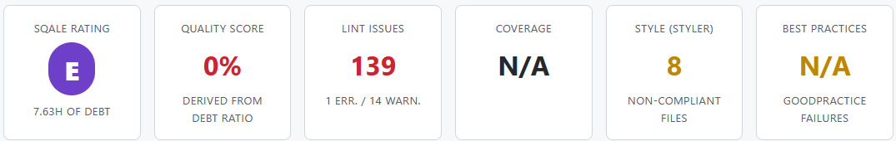
Version 0 — Dette technique
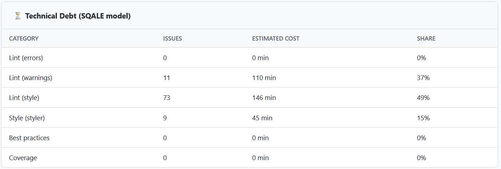
Version 0 — Hotspots
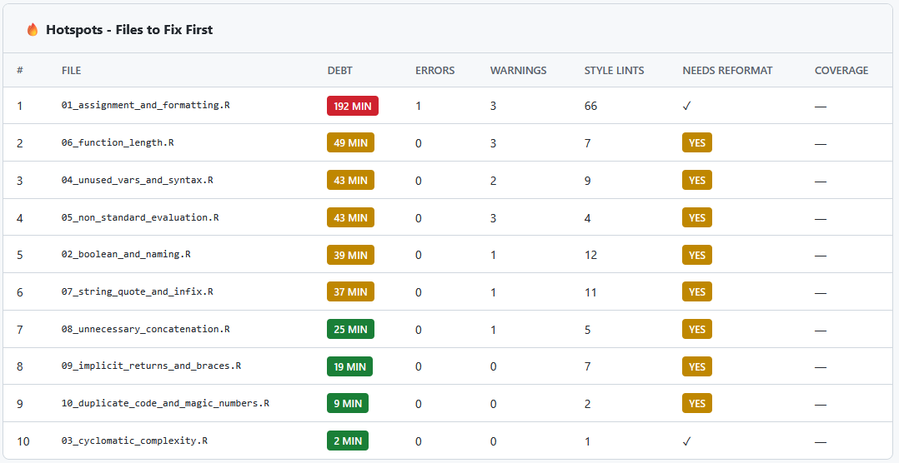
Version 0 — Lint issues
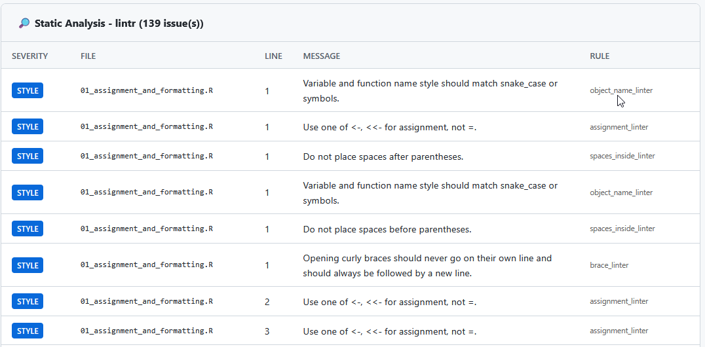
Étape 1 — Corriger le style automatiquement
sonar_fix() s’appuie sur air, le formateur R rapide de Posit.
── rsonar Fix (dry-run) ──────────────────────────────────────────────────────────────────────────────────────────────────
ℹ Path: /var/data/nfs/CERISE/00-Espace-Personnel/damien.dotta/rsonar_tests
ℹ 10 R file(s) found
✔ Report saved: sonar-fixes.json
── rsonar Fix Report (dry-run - no files modified) ───────────────────────────────────────────────────────────────────────
ℹ Path : /var/data/nfs/CERISE/00-Espace-Personnel/damien.dotta/rsonar_tests
ℹ Files : 10 scanned, 10 modified
ℹ Time : 1.8s
── Fixes applied
styler: 8fixes to 10 file(s)
spacing: 3
true_false: 3
commas: 1
cleanup: 35
assignment: 4
unused_vars: 3
ℹ Run `sonar_fix()` with `dry_run = FALSE` to apply fixes.
✔ Applying fixes to 10 file(s) [2s]Étape 1 — Corriger le style automatiquement
Avec dry_run à FALSE, les scripts sont modifiés :
Version 1 — Résultat
# File 1: Assignment operator & formatting issues
Part_SAU = function( SAU_HA = 80 , surface_totale = 100 , unused_arg = 10 ){
if( SAU_HA == NA || surface_totale == NA || SAU_HA == NULL ){ return( NULL ) }
for( i in 1:length( SAU_HA ) ){ print( i ) }
msg = paste( "Part SAU: " , SAU_HA , sep = "" )
if( class( SAU_HA ) == "numeric" ){ warning( msg ) }
if( SAU_HA > 0 && surface_totale > 0 ){
res <- ( SAU_HA / surface_totale ) * 100
}
return( round( res , 1 ) )
print("Fini"
}C’est mieux mais tout n’est pas réglé.
Version 1 — Résultats
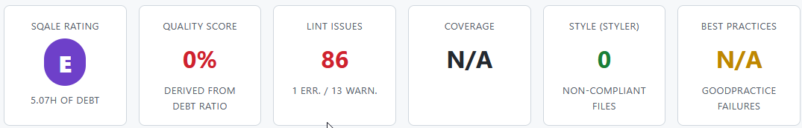
Sur notre script exemple :
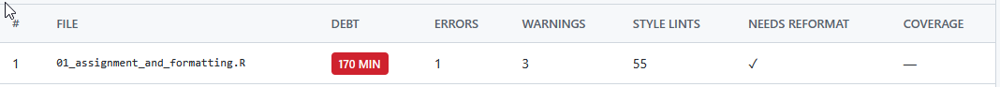
Version 2 — Refactoriser/documenter
Améliorations manuelles :
- renommer
Part_SAU→calculer_part_sauetSAU_HA→sau_ha(snake_case) - remplacer
SAU_HA == NA→is.na()etclass() == "numeric"→is.numeric() - supprimer la boucle
for (i in 1:length(...)) print(i) - corriger l’erreur de syntaxe
print("Fini"et revenir au retour implicite - ajouter la documentation roxygen2
Version 2 — Refactoriser/documenter
#' Calculer la part de Surface Agricole Utile (SAU)
#'
#' @param sau_ha Numérique ou vecteur numérique. La SAU en hectares.
#' @param surface_totale Numérique ou vecteur numérique. La surface totale en ha.
#'
#' @return La part de SAU en pourcentage.
#' @export
calculer_part_sau <- function(sau_ha = 80, surface_totale = 100) {
if (is.null(sau_ha) || is.null(surface_totale)) {
return(NULL)
}
if (any(is.na(sau_ha)) || any(is.na(surface_totale))) {
return(NULL)
}
if (any(sau_ha < 0) || any(surface_totale <= 0)) {
stop("Les surfaces doivent être positives et la surface totale > 0.")
}
res <- (sau_ha / surface_totale) * 100
if (any(res > 100)) {
warning("Au moins une valeur de SAU dépasse la surface totale.")
}
return(res)
}Version 2 — Refactoriser/documenter
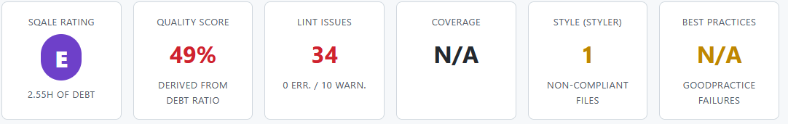
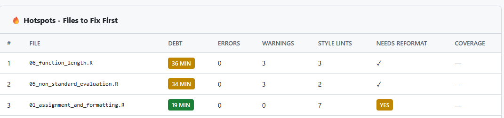
Version 3 — Ajouter des tests
tests/testthat/test-calculer-part-sau.R :
library(testthat)
test_that("calculer_part_sau calcule la part de SAU sur un vecteur", {
res <- calculer_part_sau(sau_ha = c(80, 120), surface_totale = 200)
expect_equal(res, c(40, 60))
})
test_that("calculer_part_sau applique les valeurs par défaut", {
res <- calculer_part_sau()
expect_equal(res, 80)
})Version 3 — Ajouter des tests (1/2)
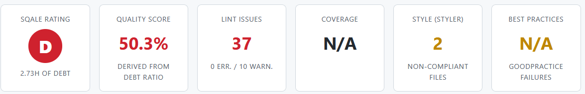
Version 3 — Ajouter des tests (2/2)
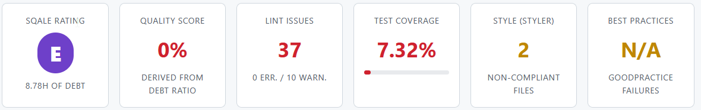
Pourquoi le score tombe à 0 % ?
sonar_analyse(".") sans include_coverage = FALSE mesure la couverture dès qu’un dossier tests/ existe. Ici, elle n’est que de 7 % : une seule fonction est testée sur les 10 scripts.
La pénalité de couverture s’applique alors :
Cette pénalité dépasse à elle seule l’effort de référence (11 fichiers × 30 = 330 min) :
→ Score 0 % · Note E. C’est la couverture globale du projet qui compte, pas celle d’un seul fichier.
Version 4 - Dépôt complet avec tests et couverture élevée
- Voir ce dépôt pour obtenir un projet R complet avec tests et couverture trés élevés.
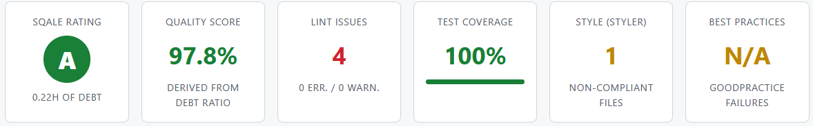
La progression en un coup d’œil
| Étape | Action | Score | Note | Couverture |
|---|---|---|---|---|
| 0 | Code initial | 0 % | E | 0 % |
| 1 | Style auto (sonar_fix) |
0 % | E | 0 % |
| 2 | Refactorisation + doc | 49 % | E | 0 % |
| 3 | Tests ajoutés sans pénalité | 50 % | D | 0 % |
| 3 | Tests ajoutés avec pénalité | 0 % | E | 7 % |
| 4 | Dépôt complet | 98 % | A | 100 % |
Chaque amélioration fait monter le score et baisser la dette.
A propos de la couverture
Pourquoi la couverture ne bouge qu’à l’étape 3 ?
La couverture n’est mesurée que lorsqu’il existe des tests. Avant (étapes 0 à 2), elle vaut 0 % et n’engendre aucune pénalité. À l’étape 3, mesurer la couverture (7 %) déclenche la pénalité (80 − 7) × 5 = 365 min, qui fait retomber le score à 0 %.
⚠️ Pour l’éviter, il faut couvrir tout le projet (couverture ≥ 80 %), pas une seule fonction. Sinon, c’est la couverture globale qui fait chuter le score.
Aller plus loin : automatiser les corrections
Le package rsonar peut être intégré dans un pipeline CI/CD pour automatiser la mesure de la qualité et le reformatage du code. Voir ce dépôt
Résultat : plus besoin de reformater son code à la main avant de commiter, ni de faire des allers-retours en revue de code sur de simples questions de style. Un développeur déclenche le job, et une MR toute prête arrive avec le diff de mise en forme et il ne reste plus qu’à la relire et la fusionner.
Exemple de pipeline CI (GitLab)
- Voir ce dépôt
Extrait minimal de .gitlab-ci.yml :
Suivre l’évolution dans le temps
# Comparer deux analyses (avant / après)
sonar_diff(res_v3, res_v0)
# Historiser les scores pour tracer la tendance
sonar_trend(res, file = "rsonar-history.json")sonar_diff(): nouveaux problèmes, problèmes corrigéssonar_trend(): courbe d’évolution de la note
Exporter les résultats (CI)
export_junit(res, "junit-results.xml") # GitLab/Jenkins
export_sarif(res, "results.sarif") # GitHub Code Scanning
export_sonar_json(res, "sonar-issues.json") # SonarQubeFormats standards : JUnit XML, SARIF 2.1.0, SonarQube Generic Issue Import.
Ce qu’il faut retenir
rsonar = mesurer, corriger, sécuriser :
- Localement :
quality_score()etdebt_index()pour un feedback immédiat - En profondeur :
sonar_analyse()+sonar_report()+sonar_hotspots() - Dans la durée :
sonar_diff()/sonar_trend()pour voir la note progresser - En CI :
quality_gate()+ exports +sonar_fix(create_mr = TRUE)
Documentation : ddotta.github.io/rsonar · intégration CI/CD